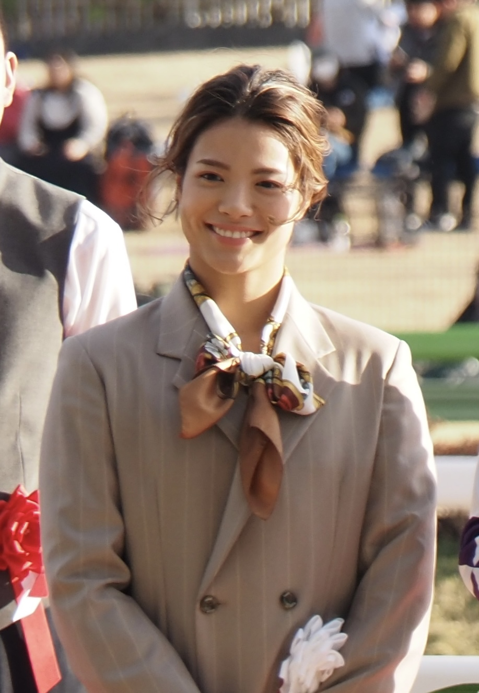

格闘技
•
柔道 / 女子52kg級
あべ うた
阿部 詩
Uta Abe
🏢 所属: パーク24
🏅 東京五輪金メダル🏅 世界選手権4度制覇🏅 内股・袖釣込腰の名手
華麗かつ鋭い技のキレで畳を支配する女王。熱き涙を力に変えて再び世界の頂へ
愛知・名古屋2026 今大会最終結果
金メダル 🥇（復活の圧倒的優勝）
決勝: 一本勝ち（鋭い内股）
パリ五輪の悔しさを胸に畳へ上がり、気迫溢れる柔道で全試合一本勝ち。圧巻の強さでアジア王座に君臨した。
🎬 最後のシーン（決定的瞬間・ハイライト）
一瞬の隙を逃さず完璧な内股を決めて一本。畳の上で涙と笑顔が混じり合った感動の瞬間。
▶️ 【YouTube】決勝戦 豪快な内股で一本！兄妹同日アベック金メダル達成 を見る
📊 公式トーナメント表・競技記録速報（Draw/Results）
女子52kg級 勝ち上がりトーナメント表＆全試合決まり技詳細
📊 【国際柔道連盟 (IJF Judobase) / 全日本柔道連盟】IJF公式 トーナメント表 (Draw) を見る ➔
経歴・これまでの歩み
兄・一二三の影響で5歳から柔道を始める。夙川学院高校在学中に世界ジュニアを制し、シニアのグランドスラムでも最年少優勝を記録。日体大進学後、2021年東京五輪で兄とともに金メダルを獲得。圧倒的な勝率を誇り、女子柔道界屈指のスターとして君臨する。
主要大会ハイライト戦績
2024年
パリオリンピック
混合団体 銀メダル
2023年
ドーハ世界柔道
女子52kg級 金メダル（連覇）
2022年
タシケント世界柔道
女子52kg級 金メダル
2021年
東京オリンピック
女子52kg級 金メダル
プレイスタイル＆世界を制する武器
左右どちらからでも瞬時に繰り出せる内股、袖釣込腰の破壊力。さらに寝技への移行スピードも抜群で、抑え込みや関節技での一本勝ちも多数。
専門家・メディアによる客観的分析・批評
✨
強み・世界トップ水準の評価
左右どちらからでも瞬時に繰り出す内股と、寝技への移行の電光石火の速さ。畳に上がった瞬間に相手を飲み込む勝負気迫は女子柔道界唯一無二。
出典・ソース:
IJF公式特集 / 全日本女子代表首脳陣
⚠️
課題・懸念される客観的事実
パリ五輪2回戦での一本負けに象徴されるように、攻め急いだ際の一瞬の受身の甘さや、敗戦直後の精神的動揺のコントロールが課題として挙げられました。
出典・ソース:
毎日新聞 / 朝日新聞スポーツ面
愛知・名古屋2026への決意とメッセージ
大会スケジュール＆観戦のツボ
🗓️ 出場予定日程・会場
2026年9月23日 女子52kg級 予選〜決勝（愛知県武道館）
👀 観戦の注目ポイント
相手の懐深くに飛び込む電光石火の内股と、一瞬の隙も許さない寝技の連携。